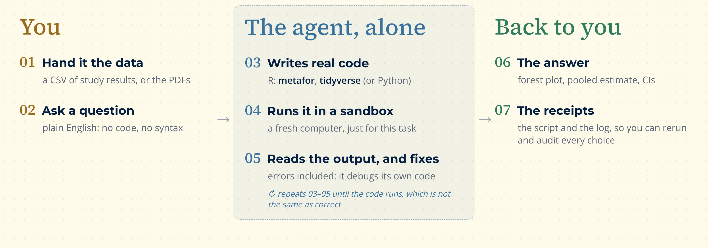
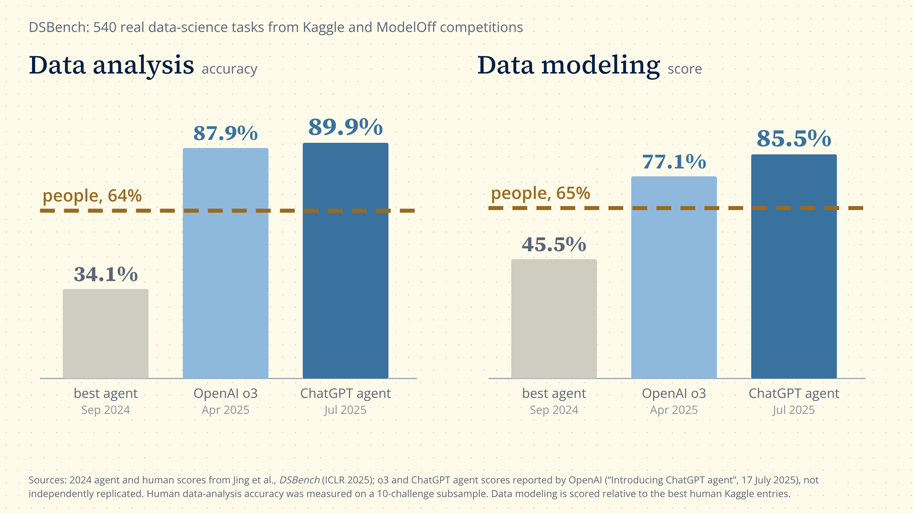
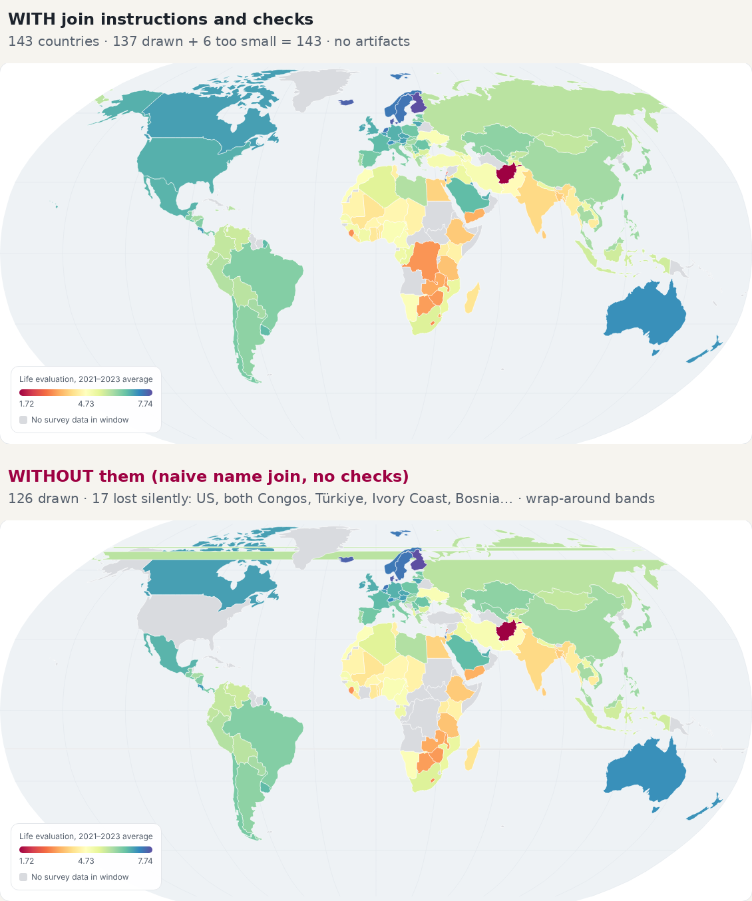
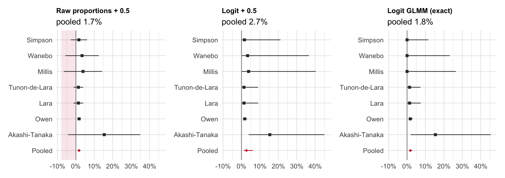

distinguish a chatbot from an AI agent that writes, runs and corrects its own code, and explain why the difference matters for reproducibility;
write a prompt with explicit checks, and explain how errors can pass silently when the checks are left out;
describe how large language models (LLMs) performed on data extraction, meta-analysis, sample size, causal inference and code translation in 2025, and how much a 2026 model improved;
recognise the failure modes that remain: an ambiguous question, an unrequested data decision, and paper details that are recalled rather than read;
list the methodological knowledge you need before you can safely let an agent do a meta-analysis.
R packages:dplyr, tidyr, purrr, ggplot2, patchwork, metafor, knitr.
Every chapter so far has asked you to write the code yourself. This one asks what changes when an AI system writes it for you. The question is no longer hypothetical: general-purpose LLM agents now take a data file and a question in plain English, write R or Python, run it, read the errors and fix them, and return a forest plot. They can save a great deal of time. They can also make every mistake described in the earlier chapters, quickly, confidently and without telling you. This chapter uses a published evaluation of ChatGPT for biostatistical work (1) and our own repetition of it with a 2026 model to show what an agent does well, where it still fails, and what you must check.
24.1 Chatbots, agents and “vibe coding”
A chatbot answers one message at a time. It tells you what to do; you copy the code into R, run it, and paste back any error. An agent does the work itself: it writes the code, runs it in a sandbox (a fresh computer set up for the task), reads the output, including errors, and corrects the code until it runs (Figure 24.1). The files it writes stay on disk, so the analysis leaves a trail.

Figure 24.1: What an agent does with a data analysis request. Steps 03 to 05 repeat until the code runs, which is not the same as until it is correct.
The receipts in step 07 are what make agentic work reproducible, but only if someone reads them. “Vibe coding”, accepting whatever runs without reading the code, is fine for a throwaway prototype and dangerous for a published analysis. Agentic coding, in the sense used here, means constraining the agent with your own rules (conventions, required checks, preferred methods), verifying every output against its source, and often having a second agent audit the first.
24.1.1 How fast is this moving?
Figure 24.2 shows one benchmark of realistic data-science tasks taken from Kaggle and ModelOff competitions (2). In September 2024 the best agent answered about a third of the data-analysis questions correctly; ten months later, agents reported scores well above the human reference.

Figure 24.2: DSBench results: the best agent in 2024 (2), and OpenAI o3 and ChatGPT agent as reported by OpenAI in July 2025. The dashed line is the human reference.
Two cautions apply. The 2025 scores were reported by the vendor and have not been independently replicated, and benchmark questions can sometimes be answered from what a model has memorised, without really using the data (3). Benchmarks measure what an agent can do; only your checks establish what it did do in your analysis.
24.2 Silent errors and why checks belong in the prompt
The errors that matter are not crashes, which an agent fixes itself, but errors that leave a plausible result. Some typical types:
a fabricated citation: a plausible reference that does not exist;
a denominator that changes: the abstract reports N = 1,247, the results table N = 935, because a cleaning step silently dropped rows;
a figure that disagrees with the table: the plot was refitted on a different sample;
an undisclosed choice: an extra covariate, a dropped “duplicate” study, a different interval method, added because it “seemed reasonable”.
Each of these appears later in this chapter in a real form. The defence is to put the checks in the prompt, so that the agent must report them, and then to read the report.
A small example outside meta-analysis makes the point. We asked an agent to build an interactive world map of life satisfaction from the World Happiness Report, joining country-level data to a file of country outlines. The prompt described the map and then added explicit checks:
Checks: Country names differ between the two files, so join through an explicit crosswalk, never on raw names. Small countries with no outline stay in search and the rankings. Before handing it over, show me: (1) countries with data, how many are drawn, which are too small to draw, and any names that failed to match; drawn + too small must equal the total; (2) that the header’s “happiest” and “least happy” agree with the ranked lists.
The result is below; hover over a country, click it, or search.
We then gave the same prompt without the checks (Figure 24.3). The second map looks finished and raises no error, but the naive join on country names silently drops 17 countries, including the United States, both Congos, Türkiye and Côte d’Ivoire, and draws artefacts across the map. In a systematic review the equivalent failure is a study that never makes it from the extraction sheet into the analysis.

Figure 24.3: The same request with explicit join instructions and checks (top: 143 countries, 137 drawn + 6 too small to draw) and without them (bottom: 126 drawn, 17 lost silently).
A standing set of rules (a project file such as CLAUDE.md or its equivalent) does the same job for every request: the project, the estimand, the preferred methods (for example, logit-transformed proportions and Hartung-Knapp-Sidik-Jonkman intervals), file locations, plotting conventions, and the checks that every analysis must report. Without such constraints the agent makes these choices for you, and they are invisible unless you read the code.
24.3 A test bed: the Dobler et al. tutorial
(1) evaluated ChatGPT (GPT-4o and o4-mini) as a tool for biostatisticians across several use cases. For each, they ran 10 independent chats with cleared memory and an identical prompt, and compared the results with expert benchmarks. All chats are in their Supporting Information. In November 2026 we repeated five of their use cases with Claude Opus 5.5, again in 10 independent agent sessions each, using their prompts verbatim. The agent sessions could write and run R or Python. Two differences from the original matter: the papers were supplied as text files rather than PDFs, and the agents’ own code tests were part of what they did, not something we asked for.
24.3.1 The case study: ductal carcinoma in situ
Several use cases are built on a systematic review of long-term outcomes of ductal carcinoma in situ (DCIS), a non-invasive breast cancer (4). It included 26 studies (5 prospective, 21 retrospective) with 9,404 DCIS cases and at least 10 years of follow-up, and pooled 10-year ipsilateral local recurrence (LR) by treatment. Its Figure 2, the invasive LR rates of 30 study arms, is our data set:
Code
dcis <-read.csv("data/ch24/stuart2015_invasive_lr.csv") # n_cases and 10-year LR (%) per armdcis <- dcis |>mutate(xi =round(n_cases * lr_rate_10yr_pct /100), # events, reconstructed from n and %treatment =factor(treatment, levels =unique(treatment)))dcis |>group_by(treatment) |>summarise(arms =n(), patients =sum(n_cases), events =sum(xi), zero_event_arms =sum(xi ==0)) |>kable()
treatment
arms
patients
events
zero_event_arms
Mastectomy
7
853
15
3
Conservation surgery with radiation therapy
10
5499
357
0
Conservation surgery without radiation therapy
9
2599
289
0
Biopsy-only
4
117
21
0
These are good test data: proportions bounded between 0 and 1, three mastectomy arms with zero events, four tiny biopsy-only series (8 to 71 patients) and clear heterogeneity. Events are reconstructed from the reported percentages, which are mostly Kaplan-Meier estimates, so the counts are approximate (Section 8.2.4).
24.4 Data extraction
The agents were asked to extract the 10-year ipsilateral LR rate, and basic study characteristics, from two of the 26 papers (5,6). Dobler et al. do not say why they chose these two, but they make a useful contrast (Table 24.1).
Table 24.1: The extraction task.
Vidali 2012
Rudloff 2009
Cohort
586 women, all surgery + radiation
294 women: 91 surgery + radiation, 200 surgery alone
Value wanted
10-year LR, whole cohort
10-year LR, radiation arm (Stuart’s treatment group)
Answer (in the text)
9.6%
11.9%
Look-alike numbers in the same paper
10% (crude), 8.3% / 11.5% (by radiation boost)
22% (whole cohort), 27.9% (no radiation), 47% (with LCIS)
The prompt explicitly asked for “the rate of ipsilateral local recurrence for conservative surgery with additional radiotherapy (no other interventions or drugs allowed) after 10 years”. Figure 24.4 shows how often each model returned the right number.
Figure 24.4: Data extraction, 10 independent runs per model and configuration. ChatGPT results from Dobler et al. (2025); reas. = reasoning mode with web retrieval. Claude Opus 5.5 (2026): our rerun with Dobler’s prompt verbatim (exact) and with a vaguer prompt that did not name the radiotherapy arm (vague).
In 2025, GPT-4o was the most reliable model. o4-mini without reasoning failed badly on the harder paper: 2 of 10 runs found 11.9%, 4 returned the whole-cohort 22% even though the prompt asked for the radiation arm, 3 returned no rate, and 1 returned results from a different study. In 2026, Claude Opus 5.5 with the same prompt was correct in all 20 runs, and every run added a caveat the prompt invited: 18 of Rudloff’s 294 patients took tamoxifen, and the paper does not say how many were in the radiation arm.
Our first attempt used a vaguer prompt that asked for “the 10-year ipsilateral local recurrence rate” without naming the arm. All 10 runs then led with the whole-cohort 22%, although every one also reported 11.9% and said to use it when pooling by treatment. The model answered the question we asked rather than the one we meant. The lesson is old, and applies equally to human extractors: define the estimand on the extraction form, including the arm, total versus invasive recurrence, and the time point, and verify every value against the source. Ten runs that agree are not ten independent confirmations; they can share one misreading of the question.
If every value must be verified anyway, what is the point of the LLM? Two things. Checking a number against the page it came from is much faster than finding it in the first place, especially across hundreds of papers. And a Cochrane review already requires two independent extractors; an agent can be one of them, with a person resolving the disagreements (Section 24.7.3).
24.5 Running the meta-analysis
Dobler et al. then gave ChatGPT the full data set and this prompt, which we also used verbatim:
The goal is to perform a subset meta-analysis for the given data set. The target variable is the local recurrence rate. Create a subset for all treatment types. Decide all methodological questions yourself (fixed effect vs. random effects, etc.). Follow clearly formulated rules for selecting the model type. Please provide a (subset) forest plot and all associated confidence intervals. Do not forget the pooled overall estimate and its confidence interval. […]
A sound analysis needs a transformation (or a model) suitable for proportions near 0, a way of handling zero events, a conceptual rather than mechanical choice between common- and random-effects models, and the correct treatment subgroups. Before looking at the agents’ answers, we do the analysis ourselves, so that we have something to check them against. A binomial-normal generalised linear mixed model on the logit scale models the counts directly and needs no continuity correction for zero events (7) (Section 9.6.4):
Code
pool_glmm <-function(d) { r <-rma.glmm(measure ="PLO", xi = xi, ni = n_cases, data = d) # random-effects logistic model p <-predict(r, transf = transf.ilogit)tibble(k =nrow(d), est = p$pred, lo = p$ci.lb, hi = p$ci.ub)}ours <- dcis |>group_by(treatment) |>group_modify(\(d, ...) pool_glmm(d)) |>ungroup() |>bind_rows(pool_glmm(dcis) |>mutate(treatment ="Overall"))ours |>mutate(across(c(est, lo, hi), \(x) round(x, 3))) |>kable()
treatment
k
est
lo
hi
Mastectomy
7
0.018
0.011
0.029
Conservation surgery with radiation therapy
10
0.067
0.051
0.088
Conservation surgery without radiation therapy
9
0.107
0.086
0.132
Biopsy-only
4
0.232
0.110
0.425
Overall
30
0.076
0.058
0.100
Table 24.2 shows what ten o4-mini chats produced in 2025, and Table 24.3 what ten Claude Opus 5.5 sessions produced in 2026.
Table 24.2: Pooled 10-year invasive LR rates in ten ChatGPT o4-mini chats (Dobler et al. 2025, Table 2). CC = continuity correction; Mixed = both models reported, choice by an I² threshold.
Table 24.3: Pooled 10-year invasive LR rates in ten Claude Opus 5.5 agent sessions (our rerun, November 2026). All used a logit GLMM with random effects chosen a priori.
Session
Mastect.
S+R
S-R
Biopsy
Overall
CI
Data decision
Run 1
0.018
0.067
0.107
0.232
0.076
t(k-1)
kept all 30 arms
Run 2
0.018
0.067
0.107
0.232
0.076
t(k-1)
kept all 30 arms
Run 3
0.018
0.067
0.107
0.232
0.076
t(k-1)
kept all 30 arms
Run 4
0.018
0.067
0.107
0.232
0.076
Wald z
kept all 30 arms
Run 5
0.018
0.067
0.107
0.232
0.076
t(k-1)
kept all 30 arms
Run 6
0.018
0.067
0.107
0.232
0.076
t(k-1)
kept all 30 arms
Run 7
0.018
0.067
0.107
0.232
0.079
t(k-1)
dropped “Lara”
Run 8
0.018
0.067
0.107
0.232
0.076
Wald z
kept all 30 arms
Run 9
0.018
0.067
0.107
0.232
0.076
Wald z
kept all 30 arms
Run 10
0.018
0.067
0.107
0.232
0.076
Wald z
kept all 30 arms
The ChatGPT chats gave ten different answers. Part of the reason is built in: an LLM chooses each next word with some randomness, controlled by a setting called the temperature. At a temperature of 0 it always takes the most likely word; chat applications use a temperature above 0, so the same prompt can give a different answer each time. Only one used a logit transformation; five added a continuity correction (one of them to every count, not just zeros); two returned an overall rate of 0.00 because of estimation problems; and all ten chose between common- and random-effects models by an I² threshold (6 with I² ≥ 50%, 4 with I² > 50%), which is not a recommended basis for the choice (8,9) (Section 9.4). None mentioned Hartung-Knapp-Sidik-Jonkman intervals unless asked.
The Claude sessions agreed with each other, and with our own analysis above. All ten used a binomial GLMM with no continuity correction, chose random effects in advance because the studies differ in design, era and population (and said explicitly that I² should not drive the choice), reported prediction intervals and sensitivity analyses, and rejected the Freeman-Tukey double-arcsine transformation, whose back-transformation can mislead (10). Six of ten used t-based intervals in the spirit of HKSJ as their main analysis and the other four as a sensitivity analysis (11). Strictly, these are not HKSJ intervals: in rma.glmm(), test = "t" replaces the normal quantile by a \(t_{k-1}\) quantile but does not rescale the standard error by \(\sqrt{q}\), the factor that can make HKSJ narrower than the Wald interval when \(q < 1\) (Chapter 23).
Two things did not improve. First, nine of the ten sessions flagged “Lara” (73 patients) and “Tunon-de-Lara” (74 patients) in the mastectomy group as a probable duplicate. They are different cohorts, one American and one French (4), and only the one session that looked up the source paper said so. Eight of the nine handled the alarm well: they kept “Lara” and showed, as a sensitivity analysis, what happens without it. One session (run 7) dropped it from its main analysis, which is why its overall estimate differs (7.9% instead of 7.6%). It did say so, in the second point of its methods, but nobody had asked for it, and you would catch it only by reading the report. This is exactly the “undisclosed choice” of Section 24.2, and it is partly invited by the prompt, which told the agent to “decide all methodological questions yourself”. A prompt that said “analyse every row as supplied; flag concerns but do not exclude” would almost certainly have turned the decision into a flag. Second, the agents’ mastectomy estimate, 1.8%, is below the expert benchmark of 3%. That is not an error by the agents, as Figure 24.6 shows.
Figure 24.5: Pooled rates from each session. Blue: ChatGPT o4-mini (2025); orange: Claude Opus 5.5 (2026); black diamond: the expert benchmark of Dobler et al.
24.5.1 Same estimate, different uncertainty
The sessions also split on the confidence interval: six used \(t_{k-1}\) quantiles and four the normal (\(z\)) quantile. The point estimates are identical, so the difference is easy to miss:
Code
ci_both <-function(d) { f <-function(test) predict(rma.glmm(measure ="PLO", xi = xi, ni = n_cases, data = d,test = test), transf = transf.ilogit) z <-f("z"); t <-f("t")tibble(k =nrow(d), estimate =100* z$pred,`95% CI, z`=sprintf("%.1f to %.1f", 100* z$ci.lb, 100* z$ci.ub),`95% CI, t`=sprintf("%.1f to %.1f", 100* t$ci.lb, 100* t$ci.ub))}dcis |>group_by(treatment) |>group_modify(\(d, ...) ci_both(d)) |>ungroup() |>mutate(estimate =round(estimate, 1)) |>kable()
Table 24.4: The same logit GLMM with normal (z) and t(k-1) confidence intervals; pooled 10-year invasive LR, %.
treatment
k
estimate
95% CI, z
95% CI, t
Mastectomy
7
1.8
1.1 to 2.9
0.9 to 3.3
Conservation surgery with radiation therapy
10
6.7
5.1 to 8.8
4.9 to 9.1
Conservation surgery without radiation therapy
9
10.7
8.6 to 13.2
8.2 to 13.7
Biopsy-only
4
23.2
11.0 to 42.5
6.6 to 56.4
With 9 or 10 studies the choice hardly matters. With the 4 biopsy-only studies, \(t_3 = 3.18\) against \(z = 1.96\) makes the interval about 60% wider (6.6% to 56.4% rather than 11.0% to 42.5%). Two “identical” analyses can therefore give a reader quite different impressions of precision. The interval method is a choice to pre-specify in the protocol, not one to leave to the agent.
The biopsy-only estimate also differs from the benchmark (23.2% against 25%). The GLMM uses the exact binomial likelihood, whereas the benchmark pooled logit proportions by inverse variance, which weights tiny series such as 4/8 and 4/13 differently. With four studies and 117 women, the difference is small beside the width of either interval.
24.5.2 How zero events change the answer
The mastectomy group has seven studies, three of them with no events (Simpson 0/30, Wanebo 0/14, Millis 0/12). Figure 24.6 pools all seven three ways.
Code
mx <-filter(dcis, treatment =="Mastectomy") |>transmute(study, xi, ni = n_cases)lv <-c(mx$study, "Pooled")tidy_forest <-function(est, lo, hi, pooled) bind_rows(tibble(study = mx$study, est = est, lo = lo, hi = hi),tibble(study ="Pooled", est = pooled[1], lo = pooled[2], hi = pooled[3])) |>mutate(study =factor(study, levels =rev(lv)), pooled = study =="Pooled")d_raw <-escalc(measure ="PR", xi = xi, ni = ni, data = mx, add =0.5, to ="only0")d_lo <-escalc(measure ="PLO", xi = xi, ni = ni, data = mx, add =0.5, to ="only0")r_raw <-rma(yi, vi, data = d_raw); r_lo <-rma(yi, vi, data = d_lo)r_gl <-rma.glmm(measure ="PLO", xi = xi, ni = ni, data = mx)se <- \(d) sqrt(d$vi)f_raw <-tidy_forest(d_raw$yi, d_raw$yi -1.96*se(d_raw), d_raw$yi +1.96*se(d_raw),c(coef(r_raw), r_raw$ci.lb, r_raw$ci.ub))f_lo <-tidy_forest(plogis(d_lo$yi), plogis(d_lo$yi -1.96*se(d_lo)), plogis(d_lo$yi +1.96*se(d_lo)),plogis(c(coef(r_lo), r_lo$ci.lb, r_lo$ci.ub)))cp <-map2(mx$xi, mx$ni, \(x, n) binom.test(x, n)$conf.int) # exact study CIsf_gl <-tidy_forest(mx$xi / mx$ni, map_dbl(cp, 1), map_dbl(cp, 2),plogis(c(coef(r_gl), r_gl$ci.lb, r_gl$ci.ub)))panel <-function(df, ttl, shade =FALSE) {ggplot(df, aes(est, study, shape = pooled, colour = pooled)) + { if (shade) annotate("rect", xmin =-0.08, xmax =0, ymin =-Inf, ymax =Inf, fill = red, alpha =0.10) } +geom_vline(xintercept =0, colour ="grey60") +geom_pointrange(aes(xmin = lo, xmax = hi), linewidth =0.5, size =0.35) +scale_shape_manual(values =c(15, 18), guide ="none") +scale_colour_manual(values =c("grey20", red), guide ="none") +scale_x_continuous(limits =c(-0.08, 0.46), labels = scales::percent_format(accuracy =1)) +labs(title = ttl, subtitle =sprintf("pooled %.1f%%", 100* df$est[df$pooled]), x =NULL, y =NULL) +theme(plot.title =element_text(face ="bold", size =11))}panel(f_raw, "Raw proportions + 0.5", shade =TRUE) +panel(f_lo, "Logit + 0.5") +panel(f_gl, "Logit GLMM (exact)")

Figure 24.6: The mastectomy group (7 arms, 3 with zero events) pooled three ways. Raw proportions with 0.5 added to zero cells give impossible negative limits; the logit with the same correction turns each zero into a 2 to 4% ‘study’ and inflates the pooled rate; the binomial GLMM needs no correction.
Raw proportions give five of seven study intervals that extend below 0%, an impossible region. The logit transformation with a 0.5 correction avoids that, but turns each zero-event arm into a 2% to 4% “study” and pulls the pooled rate up to 2.7%, close to the expert benchmark. The GLMM uses the counts as they are and gives 1.8%. The agents’ answer was the better one; checking it required knowing why the methods differ.
24.6 Other tasks: sample size, causal inference, code translation
Dobler et al. covered further use cases. Table 24.5 summarises the three we reran with their prompts; we did not rerun the latent class, surrogacy, simulation or SPSS-to-R tasks.
Table 24.5: Three further use cases, 10 independent sessions each. aDobler et al.’s subjective satisfaction, 1 (low) to 10 (high). bOur own extrapolation to the same scale, equally subjective and for comparison only (data extraction would score 9.5 and the meta-analysis 9.0 on the same basis).
Task
ChatGPT (2025)
Score 2025a
Claude Opus 5.5 (2026)
Score 2026b
Sample size, survival trial (reference N = 334)
median 84 (range 78 to 665) before correction; allocation omitted from Schoenfeld’s formula
8.0
191 events and 336 patients in 10/10
9.5
Causal inference: IPCW for treatment switching
DAG captured feedback in 5/10; switching model restricted to the control arm in 1/10; no fully correct code
5.0
DAG and switching model right in 10/10; code ran and recovered a simulated true effect in 10/10 (the agents’ own tests)
8.5
Code translation, R stepAIC to Python
AIC-based selection in 2/10; documentation sometimes claimed AIC when the code did not use it
5.5
AIC stepwise in both directions in 10/10; same model and accuracy as R
9.5
Why a sample-size task in a chapter on meta-analysis? A meta-analysis often ends by concluding that a new trial is needed, and its pooled estimate supplies the effect size for planning it. Dobler et al.’s scenario was a two-arm survival trial with median survival of 12 versus 18 months, 80% power, two-sided α = 0.05, 1:1 allocation, 2 years of follow-up and 15% dropout. The sample-size result is easy to check, and checking it is a good habit. A survival trial needs a number of events; Schoenfeld’s formula (12) gives it for a log-rank test with allocation proportion p, and the number of patients follows from the probability of an event during follow-up:
Code
hr <-12/18# exponential survival: ratio of mediansp <-0.5# 1:1 allocationd <- (qnorm(0.975) +qnorm(0.80))^2/ (p * (1- p) *log(hr)^2) # events neededlam <-log(2) /c(standard =12, new =18) # hazard per monthp_event <-mean(1-exp(-lam *24)) # chance of death within 24 months, averagedn_eval <-ceiling(d) / p_event # evaluable patientsn_total <-2*ceiling(n_eval /2/0.85) # inflate for 15% dropout, equal armsc(events =ceiling(d), evaluable =ceiling(n_eval), recruit = n_total)
events evaluable recruit
191 283 334
The \(p(1-p)\) term is the allocation proportion that the 2025 chats typically dropped from the denominator, which divides the required events by four. This calculation gives 334, the reference value; the agents’ 336 comes from rounding up at an earlier step (142 evaluable patients per arm, then 142/0.85 rounded up to 168).
In the causal-inference task, eight of the ten sessions first wrote a subtly biased weight numerator (it conditioned on progression), noticed that their own simulation missed the known true effect, and fixed it. The checks were the agents’ own simulations rather than an independent audit, and none could read the full Robins and Finkelstein paper the prompt referred to (13); all said that their summary of it came from the abstract or from memory and should be checked. In code translation, we re-ran one Python script next to the original R and obtained the same selected model, AIC and test accuracy.
24.7 What has changed, and what has not
The pattern across tasks is clear. In 2025 the summary was “understands the concepts, fails at the implementation”. In 2026 the implementation was right in almost every run, largely because the agent tested its own work: it ran the code, compared the result with a simulation or with R, and corrected itself. What remained was:
the question: a vague request is answered as asked, consistently;
unrequested decisions: a “duplicate” dropped without being asked;
recall presented as reading: details of a paper the agent could not open;
self-graded checks: tests designed by the same agent that wrote the code.
Dobler et al.’s own guidelines still apply: use LLMs to save time, not to replace expertise; give context and constraints; check outcomes critically; verify that the text matches the code; re-run analyses in independent sessions; and re-evaluate regularly, because today’s failure may be tomorrow’s success (1). The last point cuts both ways: the 2026 results in this chapter will also date.
For reproducibility, save the exact prompt, the model and version, the date, and the agent’s code and log alongside the verified analysis, and report which parts were AI-assisted and which were checked by a person. “I used an AI” is not a methods section.
24.7.1 The skill minimum
To use an agent safely for a meta-analysis you must already know enough to:
define the estimand precisely enough that the extraction is unambiguous;
recognise when a transformation or a different model is needed for proportions or rare events;
judge whether the choice between common- and random-effects models was made for the right reason;
know when HKSJ or t-based intervals matter, and when they can be too narrow (Chapter 23);
spot impossible values in a forest plot;
verify extracted data against the source paper;
read the generated code and log to confirm that they do what the summary says.
This creates an uncomfortable circularity. The oversight that makes agents safe depends on the expertise that relying on them might erode (14). A user who does not know that zero events need special handling cannot tell whether the agent handled them well, and a user who has never written a meta-analysis cannot read the log. The responsibility for a correct analysis remains with the analyst, not the tool.
24.7.2 A warning from mathematics
Mathematics has already met this problem at full scale. In September 2026, OpenAI reported that about 10,000 AI agents working for 88 hours had produced a 166-page proof, checked in the Lean proof assistant, that the Navier–Stokes equations can develop a singularity in finite time (15). The result covers a version of the problem with an external force, and the Clay Mathematics Institute still lists the Millennium Prize Problem as unsolved. Mathematicians who studied the proof thought it was probably correct, but found it hard to read and said that, so far, it taught them little.
Three days later, 25 Fields Medalists signed A Severe Misalignment of AI in Mathematics(16). Their argument is that solving a famous problem has always been a proxy for the real goal, conceptual understanding: new methods, connected to earlier work and taught to the next generation. Racing to solve problems as benchmarks keeps the proxy and loses the goal, and it erodes verification, attribution and the human transmission of ideas.
Clinical research is at least as exposed. Its proxies are a P value, a hazard ratio or a published paper; its goal is clinical understanding that safely guides patient care. Four parallels stand out:
Bypassed thinking. When an agent writes the code and the synthesis instantly, the researcher skips the work in which traps such as immortal time bias, collider bias and unmeasured confounding are usually noticed (Chapter 3, Chapter 7).
Volume incentives. Careers already reward publication counts, and agents make another analysis of an electronic health record or claims database almost free. The likely result is more polished, authoritative-looking papers that are wrong for reasons no reviewer has time to find.
Unchallenged assumptions. An agent will fit the model it is given. It will not ask whether the endpoint matters to patients, whether the trials in a network are transitive (Chapter 17), or whether a “significant” subgroup is biologically plausible.
A broken teaching chain. Critical appraisal is learned in journal clubs and from mentors who show trainees how to read between the lines of a trial report. If mentor and trainee both read AI summaries, the skill is not passed on.
This chapter’s own results show why the danger is subtle. In 2026 the agent’s meta-analysis was right in every run, so the risk is not a wrong answer today; it is losing the expertise needed to know whether tomorrow’s answer is right.
The aligned use is the one this chapter has argued for: AI as an auditor and explorer, not the author. Agents are well suited to running the sensitivity analyses you specified, checking code for edge cases (zero cells, single-arm studies, missing standard deviations), stress-testing a causal diagram for overlooked confounders and colliders, and acting as a blinded second extractor or reviewer (Section 24.7.3). The question, the estimand, the protocol, the causal model and the final judgement stay with the researcher, who should treat an agent’s output with the same skepticism as any unvetted observational study.
24.7.3 Can a second agent check the first?
A tempting answer to “who checks the agent?” is “another agent”. This is the logic of double data extraction in a Cochrane review, and it has merit, but only if the second agent is genuinely independent. Two sessions of the same model share training and therefore blind spots: nine of our ten Claude sessions raised the same false duplicate alarm, and all ten 2025 ChatGPT chats chose their model by an I² threshold. A same-family reviewer would probably have agreed with both. A reviewer that reads the first agent’s polished report is also prone to anchoring, and no checker can repair a vague question, because it inherits the same brief.
We tried it. From the ten Claude meta-analysis runs in Table 24.3 we took two: run 7, which had dropped “Lara”, and run 5, which had kept all 30 rows (a control). Each was given to three fresh Claude Opus 5.5 sessions acting as reviewers, six reviewers in all. Each reviewer was asked to “find what is wrong with this analysis” and given only the data file, code, outputs and report of its run. They did not see the other runs, the benchmark, or what we expected them to find.
Table 24.6: Six blinded reviewer agents checking two meta-analysis runs (November 2026). aKaplan–Meier rates analysed as binomial counts; several arms of one trial treated as independent; \(\tau^2\) estimated at zero for the mastectomy group, so that the prediction interval equals the confidence interval.
Run 7, dropped “Lara”
Run 5, clean (control)
Re-ran the code; numbers reproduced
3/3
3/3
Flagged the unrequested drop
3/3, all as major
no false alarm (0/3)
Raised issues the benchmark ignoresa
3/3
3/3
Verdict
“revise” 3/3
“revise” 3/3
Checked “Lara” against the source paper
0/3
0/3
The reviewers found the error that mattered, did not invent one in the clean run, and raised genuine points that neither the benchmark nor the original agent had addressed. But every verdict was “revise”, each review listed 8 to 11 issues, and none could settle whether “Lara” really duplicates “Tunon-de-Lara”, because none could read the source. A reviewer agent is good at finding leads; deciding which leads matter is still a human judgement.
The most useful set-up is the one we use for human extraction:
use a different model family if possible, to reduce shared blind spots;
ask for a replication, not a review: give the second agent the protocol and the sources, never the first agent’s output, and compare the two results with a script;
adjudicate every disagreement yourself, and spot-check a purposive sample of the agreements (zero-event studies, multi-arm trials, anything unusual);
if you also ask for a review, make it adversarial and treat its alarms as leads, not verdicts.
A second agent is a good second extractor. The third reviewer who resolves disagreements, and the person who wrote the protocol, should still be you.
24.7.4 Working with an agent: final advice
The 2026 rerun shows how quickly these tools improve; it does not show that the human can leave the loop. Better tools change where you check, not whether you check. A few habits follow from this chapter:
Write the protocol before you prompt. Fix the estimand, the model and the sensitivity analyses first. Otherwise ten runs hand you ten analyses to choose from, which is the garden of forking paths at machine speed.
Ask for a script, not an answer. The code and the log are the reproducible record; the agent’s summary of them is not.
Check against something independent: your own quick analysis (as in Section 24.5), a known result, or a blinded second agent (Section 24.7.3), never only the agent’s own tests.
Read the log for decisions you did not ask for: dropped “duplicates”, recoded outcomes, regrouped arms.
Re-verify when the model changes. Trust is earned per task and per model version.
You sign the paper. Accountability cannot be delegated, and the skills in this book are what make supervision possible.
Treat the agent as a brilliant, tireless and occasionally overconfident research assistant: delegate generously, supervise closely.
Key points
An agent writes, runs and fixes its own code; “it runs” is not “it is right”.
Put the checks in the prompt, and read the report: silent errors leave plausible results.
In 2025, ChatGPT gave ten different meta-analyses of the same data, used a logit transformation once and chose models by I² thresholds.
In 2026, Claude Opus 5.5 extracted data correctly in 20/20 runs and chose sound methods in 10/10, largely because it tested its own work.
What remains is human: an ambiguous estimand, unrequested data decisions, recalled rather than read details, and self-graded checks.
Verify an agent against your own analysis or a known answer; ten agreeing runs can share one error.
You need the methodological skills of this book to supervise an agent, not just to replace one.
Better tools change where you check, not whether you check: write the protocol first, ask for a script, check independently and read the log.
As mathematicians warned in 2026, a correct answer is a proxy for understanding; in clinical research, use AI as an auditor and explorer, not as a substitute for thought.
Exercises
Re-run the extraction prompt of Section 24.4 for Rudloff with an AI tool of your choice, once naming the radiation arm and once without. What does it return?
Pool the biopsy-only group with rma.glmm() and with rma() on logit-transformed proportions with 0.5 added to zero cells. Which differs more from the raw pooled proportion, and why?
Remove “Lara” from the mastectomy group and repeat the GLMM. How much does the estimate change, and should you have removed it?
Change the allocation in the sample-size calculation to 2:1 (p = 2/3). How many events are needed, and why?
Write a project rules file (CLAUDE.md or equivalent) for your own systematic review, listing the estimand, methods and the checks every analysis must report.
Further reading
(1), the tutorial reused here; its Supporting Information contains every chat.
(4), the DCIS meta-analysis that supplies the data.
(7) and (10) on pooling proportions with GLMMs and the pitfalls of the double-arcsine transformation.
Jing L, Huang Z, Wang X, Yao W, Yu W, Ma K, et al. DSBench: How far are data science agents from becoming data science experts? In: International conference on learning representations (ICLR) [Internet]. 2025. Available from: https://arxiv.org/abs/2409.07703
3.
Nie F, Wang J, Hua H, Bianchi F, Kwon Y, Qi Z, et al. DSGym: A holistic framework for evaluating and training data science agents [Internet]. 2026. Available from: https://arxiv.org/abs/2601.16344
4.
Stuart KE, Houssami N, Taylor R, Hayen A, Boyages J. Long-term outcomes of ductal carcinoma in situ of the breast: A systematic review, meta-analysis and meta-regression analysis. BMC Cancer [Internet]. 2015;15:890. Available from: https://pmc.ncbi.nlm.nih.gov/articles/PMC4641372/
5.
Vidali C, Caffo O, Aristei C, Bertoni F, Bonetta A, Guenzi M, et al. Conservative treatment of breast ductal carcinoma in situ: Results of an Italian multi-institutional retrospective study. Radiation Oncology [Internet]. 2012;7:177. Available from: https://pmc.ncbi.nlm.nih.gov/articles/PMC3573934/
Röver C, Knapp G, Friede T. Hartung-Knapp-Sidik-Jonkman approach and its modification for random-effects meta-analysis with few studies. BMC Medical Research Methodology [Internet]. 2015;15:99. Available from: https://pmc.ncbi.nlm.nih.gov/articles/PMC4647507/
Fields Medalists’ declaration. A severe misalignment of AI in mathematics: Declaration on math and AI [Internet]. 2026. Available from: https://mathandai.org